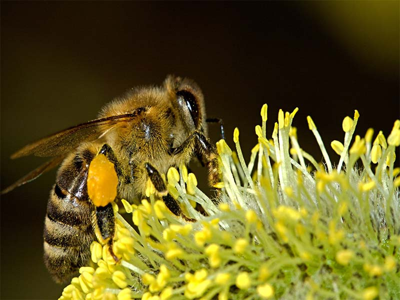

Los animales son seres vivos que realizan las funciones de nutrición, relación y reproducción. Muchos son organismos muy complejos, pero otros se distinguen por la relativa simplicidad de su proceder, como en el caso de las medusas.
Todo animal tiene las siguientes características:
Es un organismo pluricelular. Todos los animales están constituidos por varias células microscópicas que no poseen pared celular rígida. Con excepción de las esponjas (sí, las esponjas son animales), las células se organizan en tejidos que a su vez conforman órganos especializados como corazón o cerebro.
Muchos animales establecen la forma del cuerpo en las fases tempranas de su desarrollo, pero otros sufren transformaciones radicales traducidas en un proceso llamado metamorfosis. Es el caso de las mariposas.
Es heterótrofo. Los animales se alimentan de otros organismos, debido a que son incapaces de producir su alimento a partir de sus propias sustancias orgánicas. Casi todos los animales están dotados con una boca móvil útil para sujetar y/o masticar los alimentos.
Pueden alimentarse de forma activa como lo hace la mayoría de los que se desplazan, o de forma pasiva cuando aprovechan las partículas alimenticias suspendidas en el medio y las recogen cuando pasan cerca de su boca. Algunos otros animales se alimentan por filtración; no hay mejor ejemplo de este proceso de alimentación que el que es realizado por las ballenas con barbas, las cuales nadan y filtran el agua para capturar pequeños organismos.
Realiza intercambio de gases. Los animales respiran, y esto implica un proceso de intercambio de gases entre el interior y el exterior de las células. Para ello, es necesaria la obtención de oxígeno para convertir los alimentos en energía, un proceso que despide dióxido de carbono.
El intercambio de gases se efectúa de formas variadas. Algunos animales lo hacen a través de pulmones, de un sistema de tubos ramificados, de branquias y hasta de un tipo de circulación sanguínea que transporta los gases por el cuerpo.
Posee un sistema sensorial. Con excepción de las medusas, los animales cuentan con redes de células nerviosas que reaccionan a los estímulos externos. Tienen una estructura denominada receptor que detecta un cambio en el entorno, un conductor a través de la cual se desplaza la señal hasta el centro de la coordinación y un efector, es decir, un órgano encargado de dar respuesta al estímulo.
La mayoría de los animales poseen órganos de los sentidos que se encuentran concentrados en el área de la cabeza.
Características del reino Animalia Medusa, organismo conformado por más de un 90% de agua. -Exhibe comportamientos móviles. Todos los animales son capaces de realizar movimientos y muchos pueden deslizarse, reptar, correr, volar, etcétera. Quizá los mejillones pasan la mayor parte de su vida enganchados a una roca, pero incluso ahí ejecutan movimientos de bombeo de agua.
Los modos de desplazamiento son diversos. Por ejemplo, algunos animales marinos lo hacen por medio de ondulaciones corporales, otros por medio de la expulsión de un chorro de agua.
{kind=link}